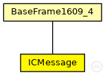

This documentation is released under the Creative Commons license
This documentation is released under the Creative Commons license(no description)
The following diagram shows usage relationships between types. Unresolved types are missing from the diagram. Click here to see the full picture.
The following diagram shows inheritance relationships for this type. Unresolved types are missing from the diagram. Click here to see the full picture.
| Name | Type | Description |
|---|---|---|
| BaseFrame1609_4 | packet | (no description) |
| Name | Type | Description |
|---|---|---|
| numMsg | unsigned long |
number of message |
| msgType | int |
message type |
| sourceId | long |
source id node - 32bits |
| destinationId | long |
destination id node - 32 bits |
| antecessorId | long |
anetecessor id node - - 32 bits |
| nextId | long |
next id node - 32 bits |
| sourceX | float |
source x - 32 bits |
| sourceY | float |
source y - 32 bits |
| sourceZ | float |
source z - 32 bits |
| antecessorX | float |
Antecessor x - 32 bits |
| antecessorY | float |
Antecessor y - 32 bits |
| antecessorZ | float |
Antecessor z - 32 bits |
| nextX | float |
next x - 32 bits |
| nextY | float |
next y - 32 bits |
| nextZ | float |
next z - 32 bits |
| destinationX | float |
destination x - 32 bits |
| destinationY | float |
destination y - 32 bits |
| destinationZ | float |
destination z - 32 bits |
| sourceMaxSpeed | float |
velocidade do agente de origem - 32 bits |
| antecessorMaxSpeed | float |
velocidade do agente de antecessor - 32 bits |
| nextMaxSpeed | float |
velocidade do prximo agente de encaminhamento que ira consumir a mensagem - 32 bits |
| destinationMaxSpeed | float |
velocidade mxima do agente destino que ira consumir a mensagem - 32 bits |
| sourceAngle | float |
angulo do agente de origem - 32 bits |
| antecessorAngle | float |
angulo do agente de antecessor - 32 bits |
| nextAngle | float |
angulo do proximo agente de encaminhamento - 32 bits |
| destinationAngle | float |
angulo do agente destino que ira consumir a mensagem - 32 bits |
| sourceAceleration | float |
aceleracao do agente de origem - 32 bits |
| antecessorAceleration | float |
aceleracao do agente de antecessor - 32 bits |
| nextAceleration | float |
aceleracao do proximo agente de encaminhamento - 32 bits |
| destinationAceleration | float |
aceleracao do agente destino que ira consumir a mensagem - 32 bits |
| sourceSpeed | float |
velocidade do agente de origem - 32 bits |
| antecessorSpeed | float |
velocidade do agente de antecessor - 32 bits |
| nextSpeed | float |
velocidade do proximo agente de encaminhamento - 32 bits |
| destinationSpeed | float |
velocidade do agente destino que ira consumir a mensagem - 32 bits |
| anteNextValidityTimeStamp | simtime_t |
alcance do sinal de comunicacao do agente de origem - 32 bits |
| sourceMsgTimeStamp | simtime_t |
timestamp da mensagem |
| antecessorMsgTimeStamp | simtime_t |
timestamp da mensagem |
| msgLifeTime | simtime_t |
message life time - 16 bits |
| AntecessoPosTimeStamp | simtime_t |
timestamp da da coleta da posicao do agente antecessor |
| SourcePosTimeStamp | simtime_t |
timestamp da da coleta da posicao do agente de origem |
| nextPosTimeStamp | simtime_t |
timestamp da da coleta da posicao do proximo agente de encaminhamento |
| destinationPosTimeStamp | simtime_t |
timestamp da da coleta da posicao do proximo agente de encaminhamento |
| validityDataTimeStamp | simtime_t |
validity timeout of the menor neighborhood condition of the route nodes |
| hopNumber | unsigned int |
hops counting of route in that moment |
| channelNumber | int |
Channel Number on which this packet was sent |
| userPriority | int |
User priority with which this packet was sent (note the AC mapping rules in Mac1609_4::mapUserPriority) |
| psid | int |
Unique number to identify the service |
| recipientAddress | LAddress::L2Type |
Recipient of frame (-1 for any) |
packet ICMessage extends BaseFrame1609_4 { unsigned long numMsg; // number of message int msgType; // message type long sourceId; // source id node - 32bits long destinationId; // destination id node - 32 bits long antecessorId; // anetecessor id node - - 32 bits long nextId; // next id node - 32 bits float sourceX = 0; //source x - 32 bits float sourceY = 0; // source y - 32 bits float sourceZ = 0; // source z - 32 bits float antecessorX = 0; // Antecessor x - 32 bits float antecessorY = 0; // Antecessor y - 32 bits float antecessorZ = 0; // Antecessor z - 32 bits float nextX = 0; // next x - 32 bits float nextY = 0; // next y - 32 bits float nextZ = 0; // next z - 32 bits float destinationX = 0; // destination x - 32 bits float destinationY = 0; // destination y - 32 bits float destinationZ = 0; // destination z - 32 bits float sourceMaxSpeed = 0; // velocidade do agente de origem - 32 bits float antecessorMaxSpeed = 0; // velocidade do agente de antecessor - 32 bits float nextMaxSpeed = 0; // velocidade do prximo agente de encaminhamento que ira consumir a mensagem - 32 bits float destinationMaxSpeed = 0; // velocidade mxima do agente destino que ira consumir a mensagem - 32 bits float sourceAngle = 0; // angulo do agente de origem - 32 bits float antecessorAngle = 0; // angulo do agente de antecessor - 32 bits float nextAngle = 0; // angulo do proximo agente de encaminhamento - 32 bits float destinationAngle = 0; // angulo do agente destino que ira consumir a mensagem - 32 bits float sourceAceleration = 0; // aceleracao do agente de origem - 32 bits float antecessorAceleration = 0; // aceleracao do agente de antecessor - 32 bits float nextAceleration = 0; // aceleracao do proximo agente de encaminhamento - 32 bits float destinationAceleration = 0; // aceleracao do agente destino que ira consumir a mensagem - 32 bits float sourceSpeed = 0; // velocidade do agente de origem - 32 bits float antecessorSpeed = 0; // velocidade do agente de antecessor - 32 bits float nextSpeed = 0; // velocidade do proximo agente de encaminhamento - 32 bits float destinationSpeed = 0; // velocidade do agente destino que ira consumir a mensagem - 32 bits simtime_t anteNextValidityTimeStamp = 0; // alcance do sinal de comunicacao do agente de origem - 32 bits simtime_t sourceMsgTimeStamp = 0; // timestamp da mensagem simtime_t antecessorMsgTimeStamp = 0; // timestamp da mensagem simtime_t msgLifeTime; // message life time - 16 bits simtime_t AntecessoPosTimeStamp = 0; // timestamp da da coleta da posicao do agente antecessor simtime_t SourcePosTimeStamp = 0; // timestamp da da coleta da posicao do agente de origem simtime_t nextPosTimeStamp = 0; // timestamp da da coleta da posicao do proximo agente de encaminhamento simtime_t destinationPosTimeStamp = 0; // timestamp da da coleta da posicao do proximo agente de encaminhamento simtime_t validityDataTimeStamp; // validity timeout of the menor neighborhood condition of the route nodes unsigned int hopNumber = 0; // hops counting of route in that moment }
This documentation is released under the Creative Commons license